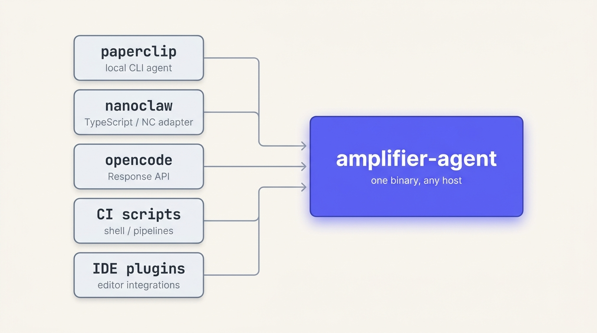
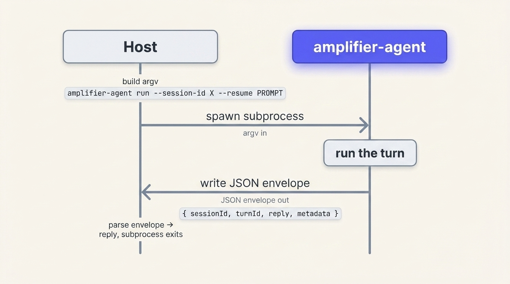
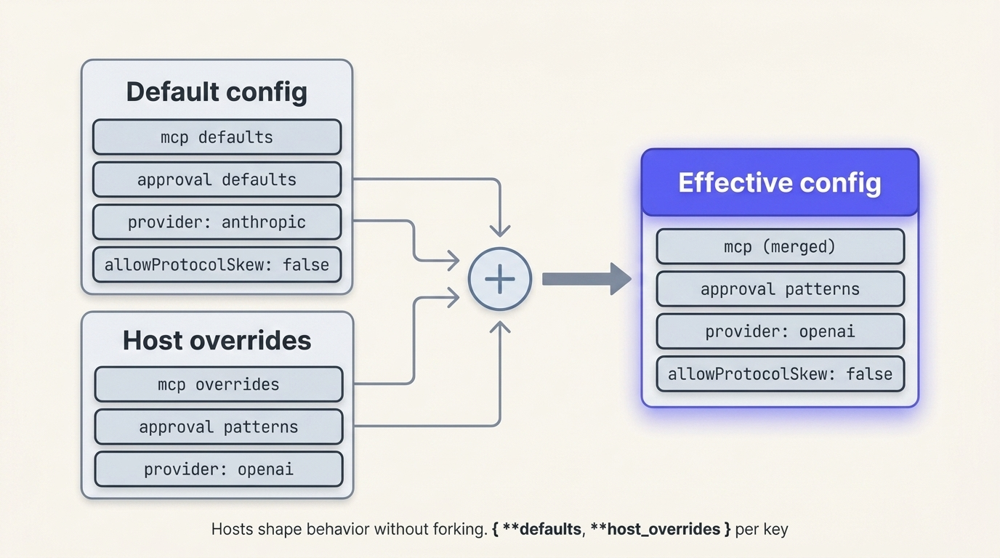
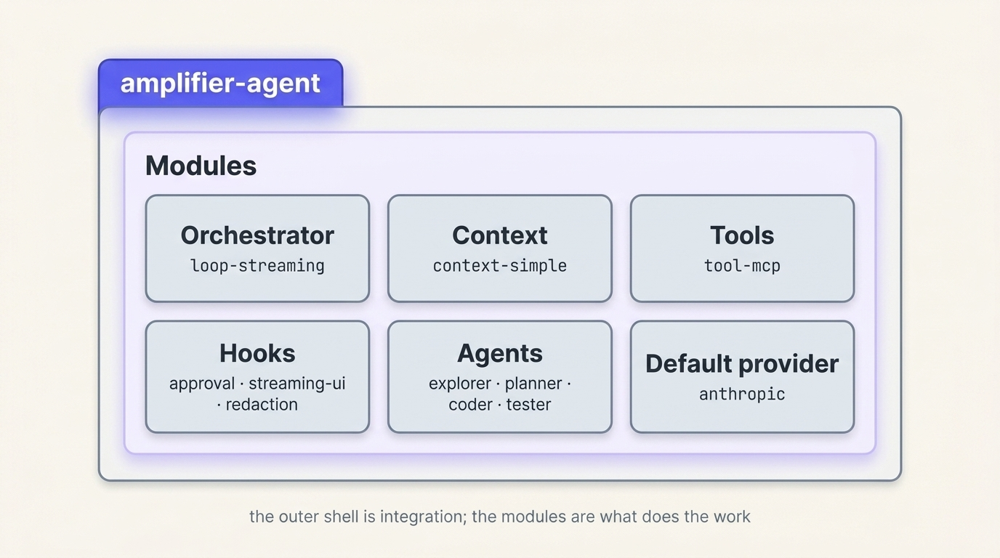

Engineering Talk · 2026
amplifier-agent is a thin Python CLI that exposes the Amplifier kernel through a single universal wire — so every host adapter integrates the same way, with no bespoke fork per surface.
The Problem
Each host arrives with its own integration contract — a TypeScript provider here, a CLI subprocess there, a Response-style API somewhere else. Ship a bespoke agent per host and the surface grows linearly with the ecosystem.
N hosts · N agent forks
Each integration is a duplicated orchestrator, tool wiring, hooks, and approval flow. The kernel ships five times.
N debugging surfaces
Five forks means five trace formats, five log conventions, five places a regression can hide. On-call pays for it.
Kernel upgrades stop being routine
A model-provider change has to land in every fork on its own cadence. The team becomes the bottleneck for every host.
Key point: The cost of bespoke-per-host is not the first integration — it's the second, third, and every kernel upgrade after that. Each fork carries its own orchestrator, tool stack, hooks, and trace format. Five forks is five places a bug can hide and five places a model-provider change has to land.
If challenged: "Couldn't a shared library solve this without a separate binary?" A library forces every host into the same language and runtime; nanoclaw runs in Docker, paperclip is local Python, opencode is TypeScript. The subprocess boundary is what makes the contract host-language-agnostic — same wire from a Node app, a shell script, or a CI runner.
Transition: The fix is a single integration surface every host can target. Here's the shape.
Confidence: High — host shapes confirmed empirically against paperclip and nanoclaw repos (Appendix B of the wrapper-and-wire design); the cost framing is the explicit motivation for the Mode A pivot.
The Solution

Hosts keep their native shape. amplifier-agent is the single integration point — invoked as a subprocess, configured per host, upgraded once for everyone.
Key point: The fan-in is the entire architectural bet. Hosts keep their idiomatic surface — TS provider, container spawn, shell invocation — and converge on one Python CLI. The kernel lives in one place and ships through one wire. The integration shape stays familiar to each host, but the substance is shared.
If challenged: "What stops every host from drifting into its own dialect of the wire?" The wire is text-first, single envelope, versioned, and conformance-tested. Drift is a hard error at the protocol-version handshake; a host on the wrong wire fails fast with protocol_version_mismatch, not silently.
Transition: What does that wire actually look like? It is small enough to fit on one slide.
Confidence: High — this is the locked architectural model in the wrapper-and-wire design (Mode A, §1.2). The host list is exactly what's in production today.
The Wire

One subprocess per turn. Stateless engine. The session lives in the
caller — continuity by --session-id, not by a long-lived process.
Key point: The wire is intentionally boring. Argv carries the request, one envelope returns on stdout, stderr stays free for diagnostics, and the process exits. There is no socket, no daemon, no streaming protocol to maintain. Multi-turn is the host's job — it re-invokes with --session-id and the engine reconstructs context from session state. Statelessness is what makes upgrades safe.
If challenged: "What about streaming tool output back to the user?" Streaming display events go to the host through the wrapper's AsyncIterable<DisplayEvent> surface, which is layered over the same subprocess — the engine emits structured events to a wrapper-watched channel during the turn, and the envelope summarizes at completion. The wire itself stays single-envelope; streaming is a wrapper concern.
Transition: The contract is small enough to demonstrate concretely — here is a real turn.
Confidence: High — exact shape from §1.2 of the wrapper-and-wire design and the Mode A amendment.
Concrete
amplifier-agent run \ --session-id "sess-42" \ --config "/etc/host/aaa.json" \ --protocol-version "0.2.0" \ --prompt "List the open PRs" # exit 0 → reply in envelope # exit 2 → protocol/config error # exit 3 → engine crash
{ "protocolVersion": "0.2.0", "sessionId" : "sess-42", "turnId" : "t-7c4a", "reply" : "Found 4 open PRs…", "error" : null, "metadata" : { "engineVersion": "0.3.0", "toolCalls" : 3 } }
The same two artifacts describe every turn from every host — a Node app, a shell script, a CI runner, or a human at a terminal.
Inspectable via ps aux, replayable from
the recorded envelope, debuggable without a SDK.
Key point: The argv side and the envelope side together fit in one screen and that is the contract. Anyone who can spawn a subprocess can drive amplifier-agent — no SDK required. Exit codes carry the protocol-vs-engine distinction so the host can branch correctly: 0 success, 2 protocol/config, 3 engine crash. The envelope's error field is null on success; populated with structured fields on failure.
If challenged: "Putting prompts in argv leaks them to ps aux — isn't that a security problem?" Yes for secrets, which is why secrets travel through env or a tmpfile that the engine reads then unlinks (CR-A in the wire design). Prompts themselves are intentionally inspectable — that's the affordance for operators debugging a turn.
Transition: Argv-per-turn is the wire. Configuration that's stable across turns — MCP servers, approval policy, provider choice — lives one layer up.
Confidence: High — envelope shape and exit-code semantics are from the locked Mode A spec.
Customization

Two-tier resolution: --config flag, then
$AMPLIFIER_AGENT_CONFIG. Four top-level keys:
mcp · approval · provider ·
allowProtocolSkew. Merge is per-key, strict on unknowns.
Key point: The config layer is mechanism, not policy. The engine resolves a path (flag, then env), parses JSON, and layers the four declared keys over the defaults — per key, not all-or-nothing. Unknown top-level keys are a hard error, so typos surface immediately instead of silently dropping. Hosts customize MCP servers, approval rules, and provider choice without touching the engine's source.
If challenged: "Why no XDG fallback like kubectl or docker?" Because amplifier-agent is programs-first — multiple hosts share $HOME on CI runners and shared boxes. A silent XDG default invites cross-host collision. The two explicit tiers (flag, env) keep config provenance visible: an explicit path shows up in ps aux; the env var is one indirection away.
Transition: Config shapes what the engine does. Now: what the engine actually contains.
Confidence: High — the two-tier model, JSON format, and strict-unknown-key validation are locked decisions D1 / D3 / D7 in the host-config-layer design.
What's Inside

Composed once, vendored, versioned with the engine. Orchestrator · Context · Tools · Hooks · Agents · Provider — upgrade them together, never one host at a time.
Key point: The Modules are the architectural payoff. Every host's turn runs the same orchestrator (loop-streaming), the same context strategy (context-simple), the same tool surface (tool-mcp), the same hook chain (approval / streaming-ui / redaction), and the same sub-agent roster (explorer / planner / coder / tester). When we ship a new provider or a smarter hook, every host gets it on the same release.
If challenged: "A host needs a custom tool that isn't in the standard set — are they stuck?" No. Custom tools attach via MCP — the host points mcp.configPath at its own MCP config, and tool-mcp mounts whatever servers it declares. The Modules ship a stable mechanism; hosts extend through it without engine changes.
Transition: One wire, one config layer, one composed runtime. Here's what changes for the team.
Confidence: High — module composition is the locked Strategy 1 in the baked-in-bundle decision; the listed modules are the current shipping set.
The Payoff
New hosts plug in through the wire alone
No engine fork, no orchestrator port, no hook re-wiring. An adapter
that can spawn() a subprocess and parse JSON is a
complete integration.
One runtime to roll forward for everyone
Provider changes, hook fixes, new sub-agents — all ship in a single
engine release. Hosts pin a protocol-version; the
handshake catches skew explicitly.
One trace format across every host
Same envelope shape, same exit codes, same audit JSON per turn. A failed turn from CI reads identically to a failed turn from an IDE plugin.
Mechanism in the engine; policy at the host
Hosts decide approval rules, MCP servers, and provider choice through config — without owning a kernel fork or arguing about who controls which knob.
Key point: Four ongoing costs flatten in the same architectural move. Onboarding new hosts becomes a wrapper task, not a kernel task. Upgrades land once and propagate everywhere. Debugging works because every host produces the same artifacts. And the engine-host split lets us hold a clear mechanism-vs-policy line.
If challenged: "What's the realistic cost of integrating a new host today?" The TypeScript wrapper has a single public surface — spawnAgent → SessionHandle.submit() → AsyncIterable<DisplayEvent>. A host adapter that maps its own request shape onto that interface is the entire integration. We've reasoned about IDE plugins, future hosts; no engine work expected.
Transition: If that's the value, the cost of trying it is small — install is one line.
Confidence: High — the four-cost framing is the explicit motivation tracked across the wrapper-and-wire and host-config designs.
Get Started
Key point: Install is one command via uv tool install — no system Python required, no virtualenv to manage. amplifier-agent prepare primes the cache on first run so the first real turn isn't slow. amplifier-agent config show is the 2am affordance — it resolves the config path, the source tier, and the merged effective values.
If challenged: "What's the ask?" Pick one host you maintain. Write the wrapper against the wire. Open an issue if the integration takes more than a working day — that's the bar this architecture is supposed to clear.
Transition: Questions.
Confidence: High — install path and admin commands match shipped CLI; prepare verb is from the wrapper-and-wire first-run UX section.